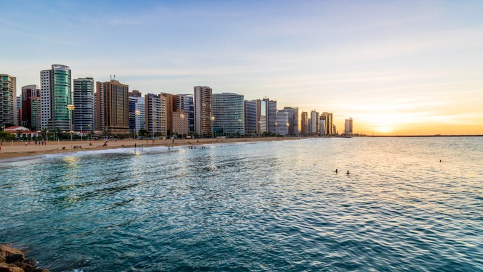
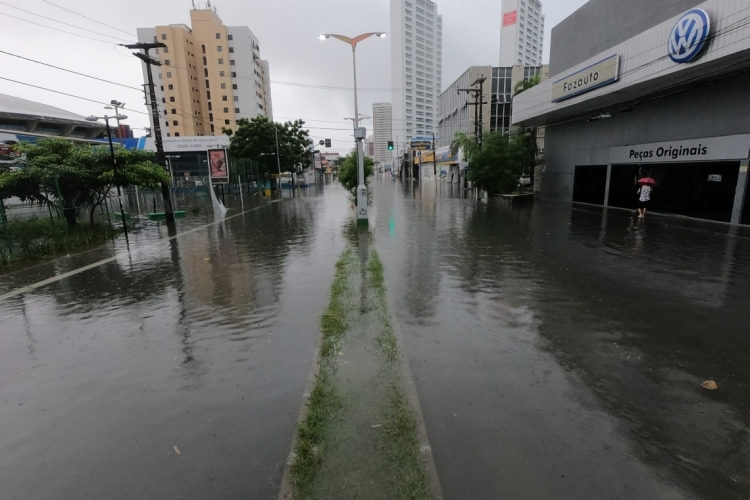

Fortaleza
Turismo
Fortaleza é a capital do estado do Ceará, no Nordeste brasileiro. A cidade é conhecida por suas praias, com falésias vermelhas, palmeiras, dunas e lagoas.
As tradições folclóricas da cidade podem ser vistas em apresentações de dança no Theatro José de Alencar, construção em estilo art nouveau inaugurada em 1910. Outro destaque arquitetônico é a Catedral Metropolitana, em estilo neogótico. ― Google.
Notícias
Defesa civil
A chuva forte que atingiu Fortaleza desde a madrugada desta segunda-feira (19) causou alagamentos em diversos pontos da capital cearense. Além de encobrir as vias, a água invadiu casas, provocando diversos transtornos para famílias que vivem em áreas de risco.
Há registro de alagamentos nos bairros Aerolândia, Dom Lustosa, Presidente Kennedy, Mondubim, Planalto Ayrton Senna, Genibaú, Antônio Bezerra, entre outros.
Além dos alagamentos, houve registros de outras ocorrências na cidade durante a chuva. Entre elas, uma árvore caída na Rua Damasceno Girão, no Bairro Jardim América, que bloqueou parte da via. Uma equipe da Autarquia Municipal de Trânsito está no local para auxiliar o tráfego.